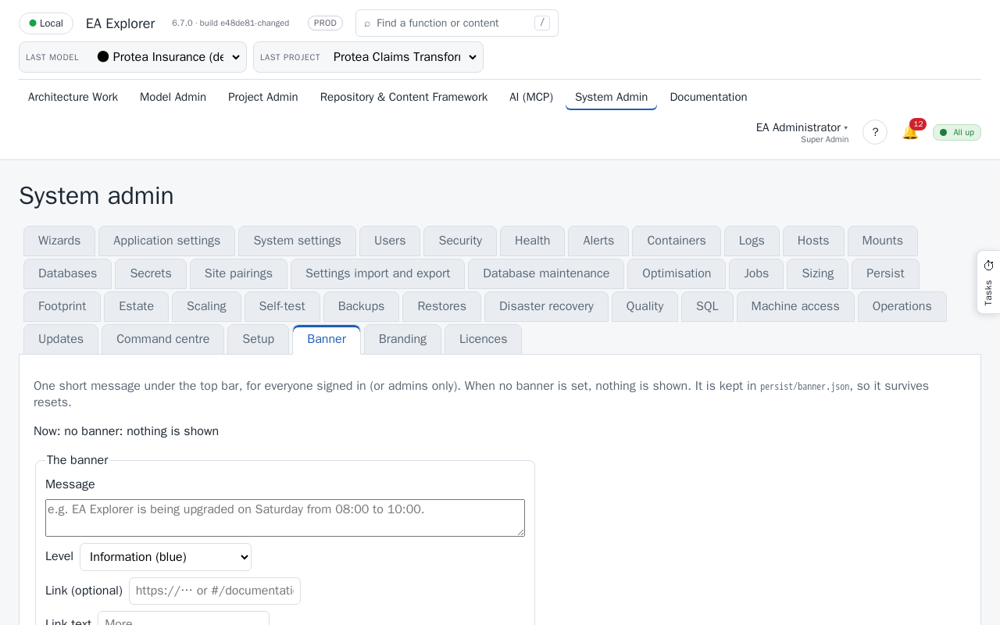

Put up a banner
For: System Admin
One short message under the top bar for everyone, or for admins only, with optional start and end times.

#/admin/bannerWhy do this
A banner tells people about planned maintenance, a new release or an incident. It starts and ends by itself, so it never outstays its purpose.
The installation is built to look after itself as far as it can, and to ask before anything risky. These tasks are the decisions it leaves to you: what to run, when, and how far to trust a change.
In TOGAF terms: Outside the method: this keeps the tool that holds the Architecture Repository running. See EA Explorer and the TOGAF Standard.
The goal: Everyone sees an important message at the top of every screen.
Before you start You need the Super Admin or IT Admin role.
Steps
- Open System Admin › Settings › Banner.
- Write the message, choose the level (information, notice or urgent), who sees it (everyone or admins only), and if you like a link and the times it shows.
- Save: it shows at once, and starts and ends by itself.
- Clear to show nothing.